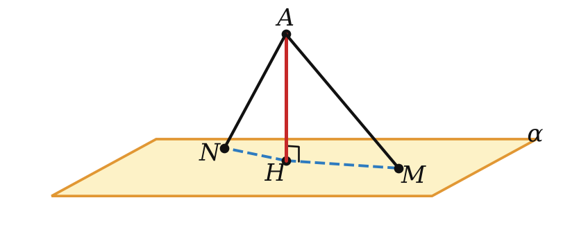
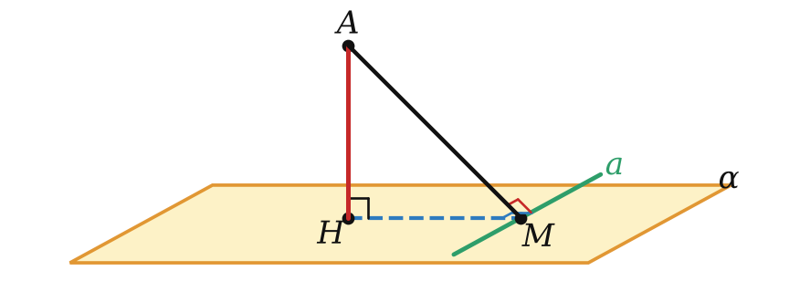
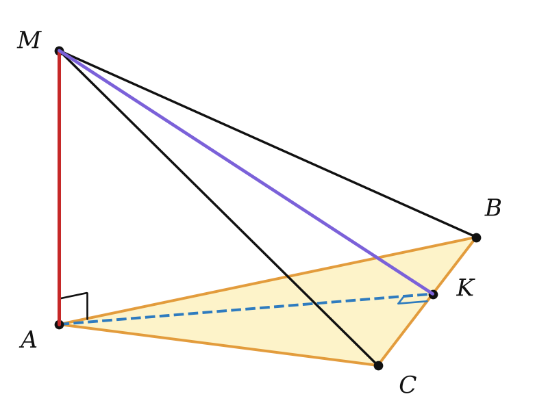

Теория
Перпендикуляр и наклонная
Как узнать, на какой высоте висит лампа? Мерить надо по отвесу — строго вниз, а не до какой-нибудь точки пола в стороне: любой другой путь от лампы до пола длиннее. В планиметрии было то же самое: расстояние от точки до прямой — это перпендикуляр, а наклонные длиннее. Теперь вместо прямой — плоскость.

Пусть точка A не лежит в плоскости α. Проведём через A прямую, перпендикулярную к α (она единственная, урок 7), и обозначим через H точку её пересечения с плоскостью.
- Перпендикуляр — отрезок AH; точка H — основание перпендикуляра.
- Наклонная — отрезок AM, где M — любая точка плоскости, отличная от H; M — основание наклонной.
- Проекция наклонной — отрезок HM, соединяющий основания перпендикуляра и наклонной.
Треугольник AHM прямоугольный (AH ⊥ HM, так как AH ⊥ α). Отсюда сразу три свойства — те же, что в планиметрии для перпендикуляра и наклонных:
- Перпендикуляр короче любой наклонной, проведённой из той же точки: AH < AM (катет меньше гипотенузы).
- Равные наклонные имеют равные проекции, и наоборот. Причина — теорема Пифагора AM² = AH² + HM², где катет AH у всех наклонных из точки A общий.
- Из двух наклонных больше та, у которой больше проекция, и наоборот (по той же формуле).
— это длина перпендикуляра, проведённого из точки к плоскости. Расстояние меньше длины любой наклонной.
Через расстояние от точки до плоскости определяются и другие расстояния:
- между параллельными плоскостями — расстояние от любой точки одной плоскости до другой. Все такие расстояния равны: перпендикуляры к одной плоскости параллельны (теорема 2 урока 6), а отрезки параллельных прямых между параллельными плоскостями равны (свойство 2° урока 4);
- между прямой и параллельной ей плоскостью — расстояние от любой точки прямой до плоскости;
- между скрещивающимися прямыми — расстояние от одной из них до плоскости, проходящей через другую прямую параллельно первой. Оно равно длине общего перпендикуляра — отрезка с концами на прямых, перпендикулярного к обеим.
Теорема о трёх перпендикулярах
Прямая, проведённая в плоскости через основание наклонной перпендикулярно к её проекции на эту плоскость, перпендикулярна и к самой наклонной.

Пусть AH — перпендикуляр к плоскости α, AM — наклонная, a — прямая плоскости α, проходящая через M, причём a ⊥ HM.
Так как AH ⊥ α, то a ⊥ AH. Итак, прямая a перпендикулярна к двум пересекающимся прямым HM и AH плоскости AHM. По признаку a ⊥ (AHM), значит, a перпендикулярна любой прямой этой плоскости, в том числе AM. ∎
Прямая, проведённая в плоскости через основание наклонной перпендикулярно к ней, перпендикулярна и к её проекции.
Доказательство то же: a ⊥ AM и a ⊥ AH ⟹ a ⊥ (AHM) ⟹ a ⊥ HM.
Почему «трёх перпендикуляров»: в теореме участвуют три прямых угла — AH ⊥ α, a ⊥ HM, a ⊥ AM. Подпиши на чертеже все три значка прямого угла и запомни: два известных прямых угла дают третий. Главное применение — расстояние от точки до прямой, когда точка лежит вне плоскости.
Разбор примеров

В треугольнике ABC AB = AC = 10, BC = 12. Отрезок MA перпендикулярен к плоскости ABC, MA = 6. Найдите расстояние от M до прямой BC.
1) Проведём высоту AK треугольника ABC: K — середина BC, AK = √(100 − 36) = 8.
2) AK — проекция наклонной MK на плоскость ABC, BC ⊥ AK. По теореме о трёх перпендикулярах BC ⊥ MK, значит, MK — искомое расстояние.
3) MK = √(36 + 64) = 10.
Частая ошибка — искать расстояние от M до BC как MB или MC. Но MB и MC — наклонные к прямой BC, они длиннее перпендикуляра. Расстояние — это перпендикуляр, и его основание надо сначала найти: проводим перпендикуляр в плоскости из основания A и пользуемся теоремой.
Из точки к плоскости проведены две наклонные длиной 10 и 17. Их проекции относятся как 2 : 5. Найдите расстояние от точки до плоскости.
Проекции 2k и 5k, расстояние d: d² = 100 − 4k² = 289 − 25k². Отсюда 21k² = 189, k = 3, проекции 6 и 15, d = √(100 − 36) = 8.
Точка M удалена от каждой вершины правильного треугольника со стороной 6 на 4. Найдите расстояние от M до плоскости треугольника.
Наклонные MA, MB, MC равны, значит, равны и их проекции: основание перпендикуляра O равноудалено от вершин — это центр описанной окружности; у правильного треугольника это его центр, OA = R = 6/√3 = 2√3. MO = √(16 − 12) = 2.
Задачи урока
Реши в тетради, к каждой задаче — чертёж. Разберём на занятии.
Тест к уроку
Домашнее задание
Задачи Д1–Д6 ниже. Выучить теорему о трёх перпендикулярах и обратную; на чертеже к Д3 и Д4 отметить все три прямых угла.